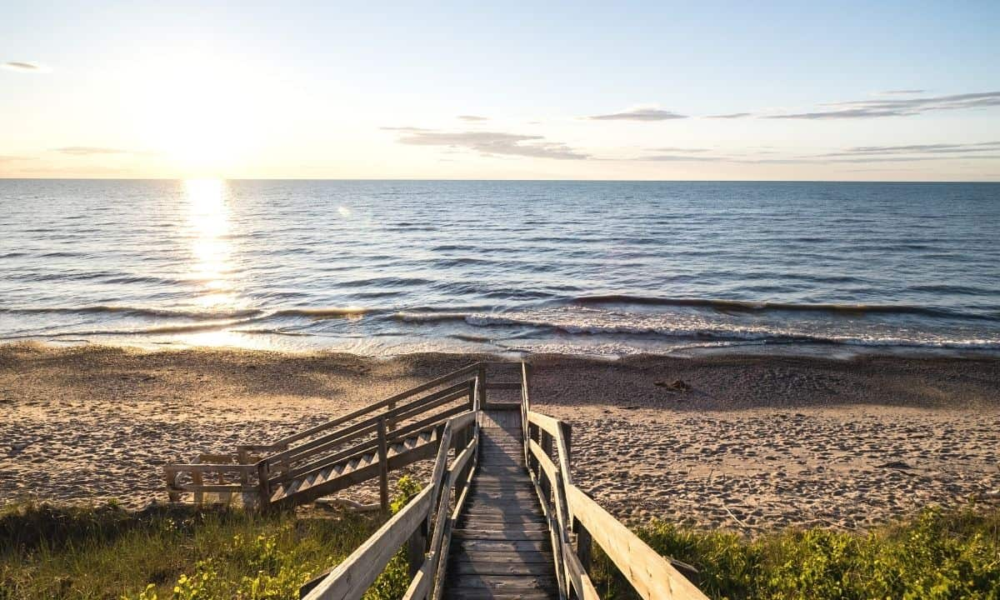

Camping
Going camping is one of my favorite things to do, and I absolutely love the sense of adventure and excitement that comes with exploring the great outdoors. There's nothing quite like being out in nature, surrounded by trees, mountains, and fresh air. It's a chance to disconnect from the stresses of everyday life and immerse myself in the beauty of the natural world.
One of the things that I love most about camping is the opportunity to challenge myself and push my limits. Whether it's hiking to the top of a mountain or braving a chilly swim in a lake, I always feel a sense of accomplishment when I take on new challenges and succeed. Of course, there are also plenty of opportunities for relaxation and contemplation while camping, such as sitting around a campfire and watching the stars come out at night.
This summer, I'm especially excited to plan some new camping adventures and explore new parts of the country. Whether it's hiking in the mountains or canoeing down a river, I can't wait to experience all the beauty and excitement that nature has to offer. Now see below for my essential packing list and the destination I will be going.
Essential Packing List
- Tent and tent stakes
- Sleeping bag and sleeping pad
- Camp stove and fuel
- Cookware, utensils, and plates/bowls
- Cooler with ice and food
- Water bottles or hydration system
- Headlamp or flashlight with extra batteries
- Camp chairs or portable seating
- First aid kit with any necessary medication
- Insect repellent and sunscreen
- Maps and compass (or GPS device)
- Multi-tool or knife
- Warm clothing layers, rain gear, and sturdy shoes/boots
- Personal hygiene items and toilet paper
- Trash bags and a way to pack out waste
Destinations
1. Algonquin Provincial Park

A large park located in the central region of Ontario, known for its beautiful lakes, forests, and wildlife. It offers a variety of camping options, including backcountry camping, car camping, and roofed accommodation.
2. Killarney Provincial Park

Located on the northern shore of Georgian Bay, this park is known for its rugged terrain, stunning views, and clear lakes. It offers backcountry and car camping options, as well as yurts and cabins.
3. Pinery Provincial Park

A popular park located on the shores of Lake Huron, known for its sandy beaches, dunes, and forests. It offers campsites, cabins, and group camping options.